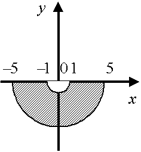

П 20.1 №18
Дайте геометрическое описание множества всех точек
комплексной плоскости, удовлетворяющих условиям:
Решение:
Запишем  в алгебраической
форме , тогда из условия: .
в алгебраической
форме , тогда из условия: .
в алгебраической
форме , тогда из условия: .Искомое множество – нижняя половина кольца с внутренним
радиусом и внешним .
Ответ:
